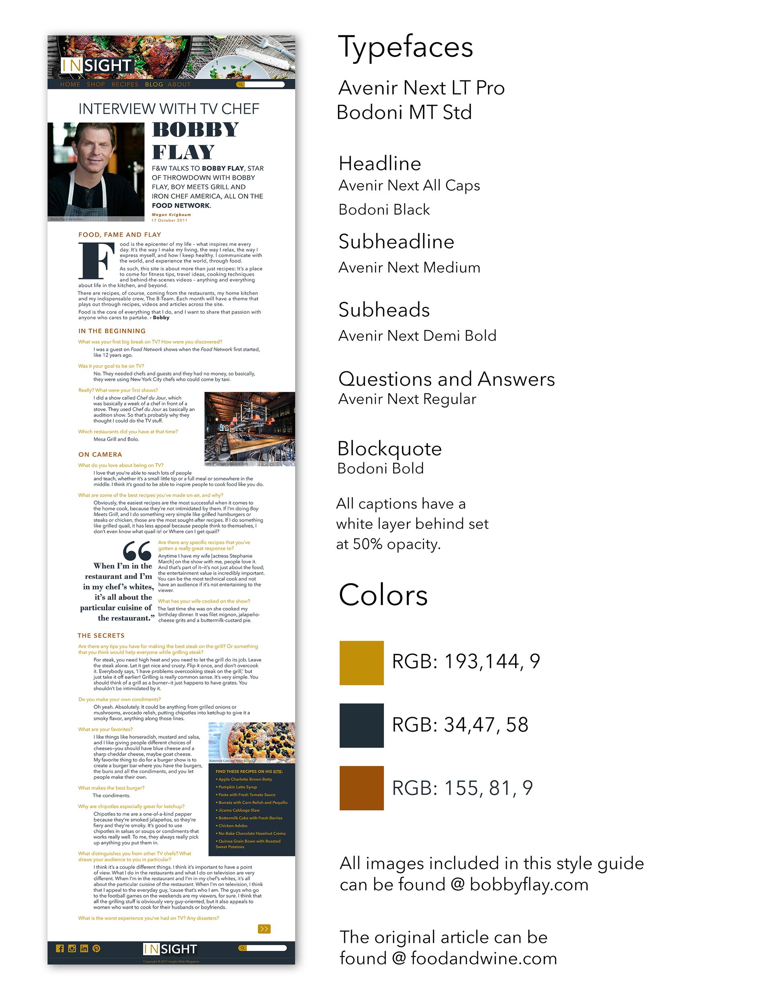

Insight Web Style Guide
This project is a web style guide for a fictional web magazine, InSight. This website includes an article regarding a 2011 interview with Food Network Chef Bobby Flay. The page includes questions and answers in the original article, a quote from Bobby Flay's website that acts as the bodycopy for the page, as well as a list to find some of his recipes. The challenge of this project was to use two fonts and only two fonts, at least three colors, and a header and footer to the website. The full project and more details can be found here 